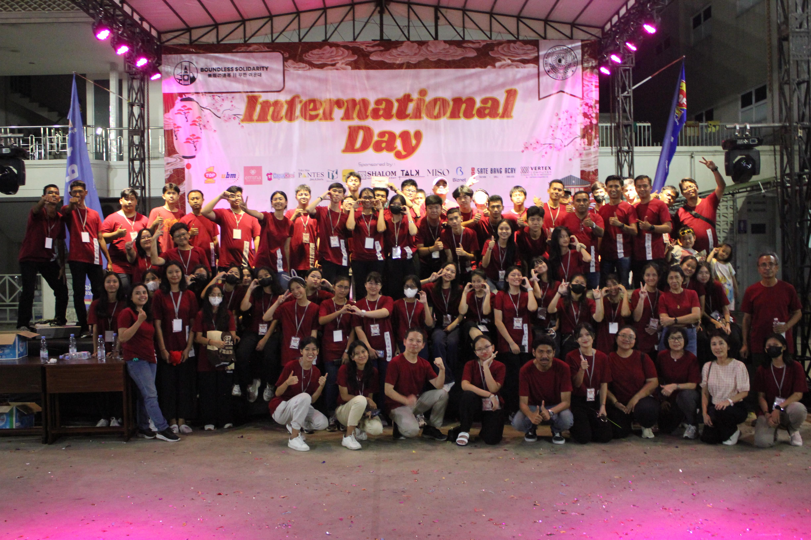
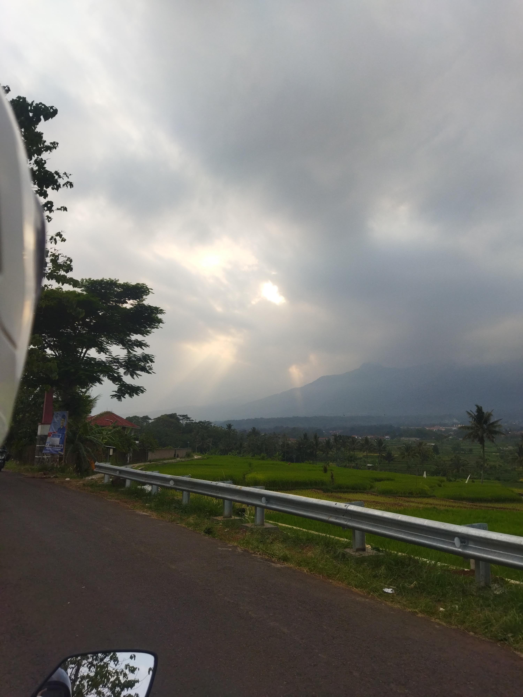
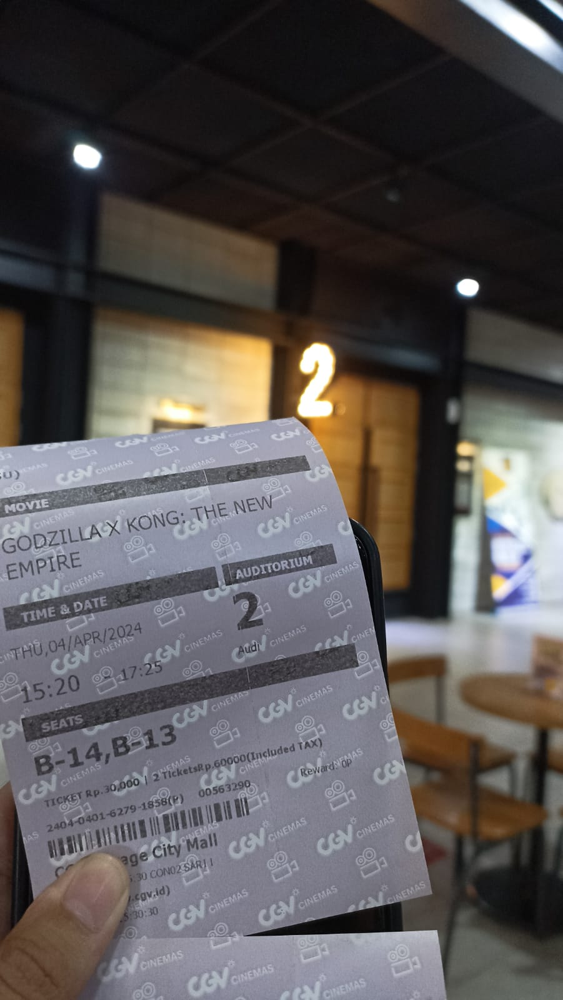
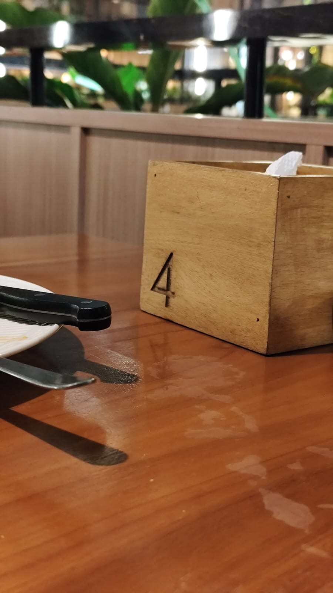

The Event That Made us Friends
...... - Ini event pertama banget yang bikin kita deket sih pas retret juga, banyak momen di era ini pas di OSIS bayar uang kas di event inter ya gitulah, terus yang kejadian ci angel terus kita jadi deket dehhh. abis kejadian ci angel kita jadi sering ngobrol curhat sampe malem, abis itu aku sweet 17 kamu dateng bareng stevey yang kamu pulang duluan wkwkwk, yaaa mulai dari situ kita jadi deket lah ya...

IGNITEEEEE!
19 December 2023 - Anjayyy christmas pertama kitaaaa, ini sangat seru walaupun aku masih baru kenalnya cuma petra ben hezki kamu liony ya gitulah. Ini seru tapi waktu itu lucu yang kita beli makanan itu terus balik balik ada temen kamuhhh.

First Dateee!
21 December 2023 - First date yang sangat gacor, semua karna dorongan lita dll jugasih jadi aku berani ngajak kamu dengan alibi kamu ga dibolehin terus aku chat mamah boleh 😌. Tapi ini seru banget padahal kita tuh baru bet pdkt cuma kek udah lama temenan seru bet pokoknya jalan jalannya, ngobrolnya sampe ke bab di gramed wkwkwk.

040424
4 April 2024 - Hari yang sangat gacorrr ini juga wkwkwk, mulai nonton film dulu abis itu pergi muter muter nyari tempat, terus kita ke foodpedia duduknya di yang atas tuh, tibalah waktunya wkwk 18.34 ngomong terus 18.40 baru dikasih jawaban. Abis itu jadi dehhh yuhuuuu, untung diterima ygy kalo ga diterima ya gataudah.

040425
4 April 2025 - Setelah banyaknya momen momen bahagia sedih dan juga ribut ribut diawal kita sampai di checkpoint pertama yaitu anniv pertama yuhuuuu. Selama setaun pacaran sama kamu walaupun banyak LDRnya cuma sangat seru dan aku bahagia, walaupun kita sempet ribut ribut pas awal awal kek abis retret dll itulah, cuma setelah itu sangat seru aku banyak berubah menjadi lebih baik juga karena kamu. Aku sangat bersyukur bisa sama kamu selama satu tahun itu, aku juga jadi banyak belajar tentang banyak hal tentang kamu dan menajadi pribadi yang lebih baik.
040426
4 April 2026 - Yuhuuu, selamat buat kita telah menacapai checkpoint kedua yaitu anniversary kedua kitaaa.
Our First Home
April 10, 2024 - Setting up our first home together, paint splashes and empty laughter.
Cooking Together
May 18, 2024 - Hungry in our tiny kitchen. A little burnt food, but hearts grew closer.
New Year Together
January 1, 2025 - First hug in the new year, new promises, and new hopes together.
Surprise and Laughter
February 12, 2025 - You gave a simple memorable surprise. Your face shone all day long.